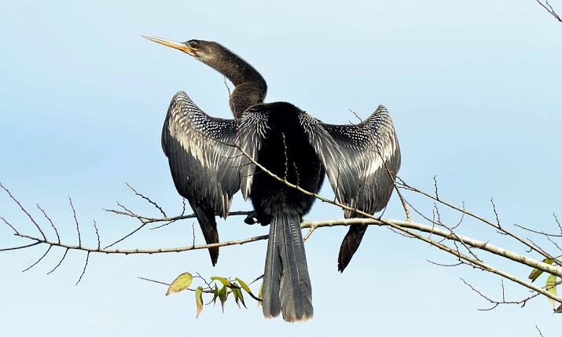

Anhinga
Birds
The anhinga, sometimes called snakebird, darter, American darter, or water turkey, is a water bird of the warmer parts of the Americas. The word anhinga comes from the Brazilian Tupi language and means devil bird or snake bird.
Family: Anhingidae
Scientific name: Anhinga anhinga
Order: Suliformes
Mass: 1.1 kg (Adult)
Conservation status: Least Concern (Population decreasing)
Rank: Species
The anhinga (/ænˈhɪŋɡə/; Anhinga anhinga), sometimes called snakebird, darter, American darter, or water turkey, is a water bird of the warmer parts of the Americas.
The word anhinga comes from the Brazilian Tupi language and means devil bird or snake bird. The origin of the name snakebird is apparent when swimming: only the neck appears above water so the bird looks like a snake ready to strike.
They do not have external nares (nostrils) and breathe solely through their epiglottis.
The anhinga is placed in the darter family, Anhingidae, and is closely related to Indian (Anhinga melanogaster), African (Anhinga rufa), and Australian (Anhinga novaehollandiae) darters.
Like other darters, the anhinga hunts by spearing fish and other small prey using its sharp, slender beak.
Biology of Anhinga
Distribution and migration
Anhinga species are found all over the world in warm shallow waters. The American anhinga has been subdivided into two subspecies, A. a. anhinga and A. a. leucogaster, based on their location.
A. a. anhinga can be found mainly east of the Andes in South America and also the islands of Trinidad and Tobago. A. a. leucogaster can be found in the southern United States, Mexico, Cuba, and Grenada. A fossil species Anhinga walterbolesi has been described from the Late Oligocene to Early Miocene of Australia.
Only birds that live in the extreme north and south of their range migrate and do so based on temperature and available sunlight. Anhingas will migrate towards the equator during winter but this range is "determined by the amount of sunshine to warm the chilled birds".
Although not in their usual range, anhingas have been found as far north as the states of Pennsylvania and Wisconsin in the United States.
Behaviour
Anhingas swim with their webbed feet and pursue their prey, fish, under water and spear their prey by rapidly stretching out their neck.
They come up to handle and swallow fish. Unlike ducks, ospreys and pelicans which coat their feathers with oil from their uropygial gland, the anhinga does not have waterproof feathers.
Their feathers get soaked upon immersion in water. Therefore, they cannot stay floating on water for long periods of time.
Their dense bones, wetted plumage and neutral buoyancy in water, allows them to fully submerge and search for underwater prey.
The anhinga cannot fly with wet feathers. If it attempts to fly while its wings are wet, the anhinga has difficulty, flapping vigorously while "running" on the water. Like cormorants, the anhinga stands with wings spread and feathers fanned open in a semicircular shape to dry its feathers and absorb heat. They face away from the sun to dry their feathers.
Anhingas lose body heat relatively fast and their posture helps them absorb solar radiation from the sun to balance the high rates of heat loss.
Because an anhinga in the drying position resembles a male turkey, it has been referred to colloquially as the water turkey or swamp turkey.
Diet
Anhingas feed on moderately sized wetland fishes.In Alabama, the anhinga's diet consists of fishes such as Mullet (fish), sunfish, catfish, suckers (Catostomidae), Chain pickerel, crayfish, crabs, shrimp, aquatic insects, tadpoles, water snakes (Nerodia) and small terrapins.
In Florida, sunfishes and bass (Centrarchidae), killifishes (Cyprinodontiformes) and live-bearing fishes (Poeciliidae) are primarily eaten by the anhingas.
Anhingas stalk fish underwater, mainly where there is some flora present. Once they locate their prey, they partly open their bill and stab the fish swiftly.
For larger fish, they use both their jaws and use the lower jaw on small fish. If the fish is too large to forage, the anhinga stabs it repeatedly and then lets it go.
The anhingas bring their capture to the surface of the water, toss it backwards and engulf it head-first.
Distribution and migration
Anhinga species are found all over the world in warm shallow waters. The American anhinga has been subdivided into two subspecies, A. a. anhinga and A. a. leucogaster, based on their location.
Distribution and migration
Anhinga species are found all over the world in warm shallow waters. The American anhinga has been subdivided into two subspecies, A. a. anhinga and A. a. leucogaster, based on their location.